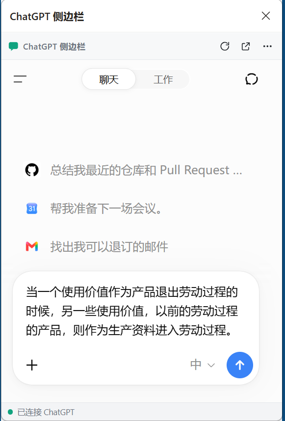
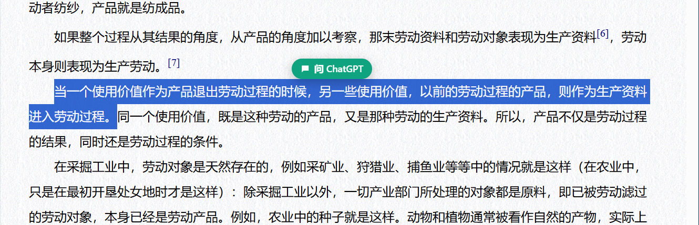

内嵌侧栏
默认模式，适合边看网页边聊天。
Embedded sidebar for side-by-side reading.
EDGE + CHROME EXTENSION · v0.4.0
选择网页文字，点击“问 ChatGPT”，即可填入或发送到 Edge / Chrome 内嵌侧栏。也可切换到更稳健的标签页投递。
Select text on any webpage and send it to ChatGPT without leaving your reading flow.
非官方项目，与 OpenAI、Microsoft 或 Google 没有隶属关系。

HOW IT WORKS · 使用流程

FLEXIBLE MODES · 灵活模式
默认模式，适合边看网页边聊天。
Embedded sidebar for side-by-side reading.
先补充“解释、翻译、总结”等要求，或直接提交原文。
Fill only for review, or submit automatically.
内嵌受限时，改用普通 ChatGPT 标签页和任务队列。
Reliable tab delivery with status and diagnostics.
GET STARTED · 开始使用
下载 Release 压缩包并解压，在 Edge 的 edge://extensions/ 或 Chrome 的 chrome://extensions/ 中开启开发人员模式，再选择“加载解压缩的扩展”。